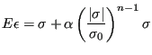

Next: *DENSITY Up: Input deck format Previous: *DASHPOT Contents
Keyword type: model definition, material
This option defines the elasto-plastic behavior of a material by means of the generalized Ramberg-Osgood law. The one-dimensional model takes the form:
|  | (620) |
First line:
Following line:
Example: *DEFORMATION PLASTICITY 210000.,.3,800.,12.,0.4
defines a Ramberg-Osgood law. No temperature dependence is introduced.
Example files: beampl.